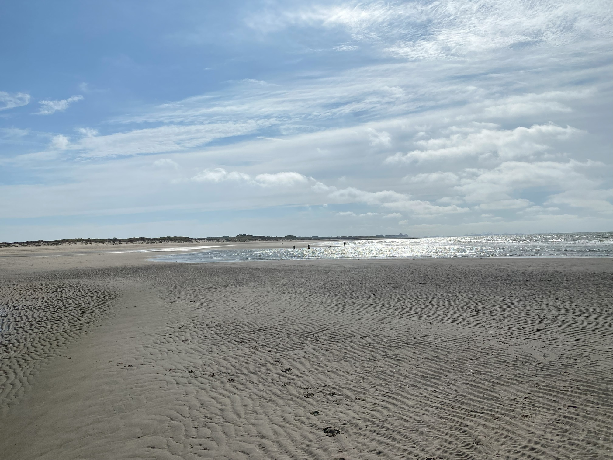
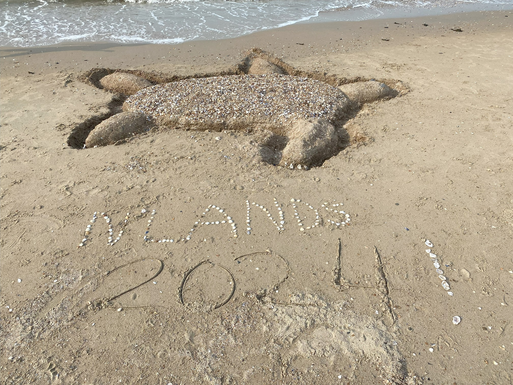
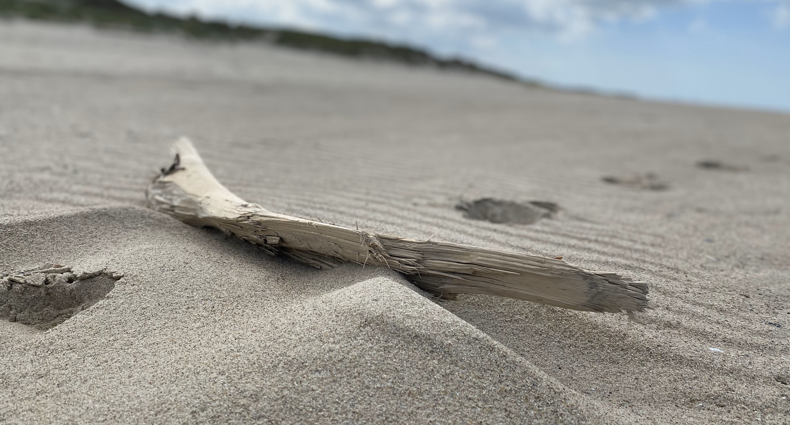

The wind and the sun. In spring summer or autumn, and even during winter time. The coast is a nice place to go in every season, for a walk, or to meet friends.
Building sand sculptured as a memory of a nice day and a good time together always works. Try it yourself, it really is a lot of fun!
Quite often you can also find drift wood in the sand that was shaped by sand, water and the sun. We normally just let it stay where it is as part of natures beauty. A really nice piece though might fing a new home.
